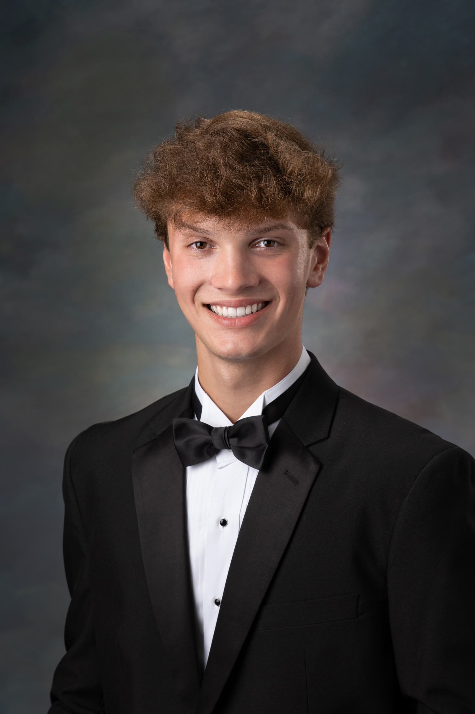

B.S. Biological Sciences
Graduation with Leadership Distinction in Research | ePortfolio

Dear reader,
My name is Samuel Harmon, and I am a graduating senior of the University of South Carolina Honors College. My hometown is Simpsonville, SC, where I am the oldest of three siblings to two loving parents. Besides academics, I work, exercise, and volunteer. I have worked for a local pool company since I was sixteen-years old, starting as a lifeguard and currently serving as the Lifeguarding Director. My duties include the education and management of over four-hundred lifeguards as well as coordinating with the clients we serve. This job has taught me to become the leader I am today, instilling in me the attitudes of ambition, integrity, and resilience that transcend occupational bounds, influencing all that I do. Integral to my energy and passion is exercise. My academic, social, and professional goals are each built on a foundation of self-care and healthfulness, accomplished through weightlifting and swimming. I have participated on the USC Club Swim Team for all four years of my college career, providing me opportunities to compete and grow as an athlete. Lastly, I enjoy volunteering my time to health-focused causes around the city of Columbia. I have primarily worked with the Free Medical Clinic of Columbia and USC’s Cancer Prevention and Control Program, which both exist to broaden healthcare access to the most vulnerable populations in our city, Columbia. I like to think that I have spent the finite years of my college experience wisely, and this portfolio of experiences will demonstrate both who I am and who I will become.
Over the past four years, I have pursued a B.S. in Biological Sciences, sprinkling in a diverse selection of psychology and medical humanities courses to augment my medicine-focused education. Though I could have graduated a year early, I decided to continue my undergraduate education as a means of exploring secondary interests and expanding the breadth of my knowledge regarding human health and, more broadly, biology. For example, I delved into the studies of neuroscience, health psychology, and medical anthropology, learning to connect a range of principles in ways that improved my understanding of the field of health research. Once a pre-medicine student with the ultimate goal of attending medical school, I followed the recommended pre-medicine educational path. However, I diverged from that path about one year after beginning a job as a research assistant in the Dudycha Lab for Environmental Ecology and Evolutionary Genomics. I discovered a form of creativity that I had not known before, designing my own project to determine the effects of inbreeding depression on a species of zooplankton, known as Daphnia. I visualized the many implications of this project as the root of my research career: the data I collected and hypotheses I proposed stimulated ideas for future research in different scientific fields, though, all connected and synergistic. In terms of academics, this monumental shift in educational and career goals led me to seek Graduation with Leadership Distinction in Research. Now, I work towards the goal of earning a PhD in a field related to human biology and health so that I can better contribute to health research as a scientist.
This portfolio of my undergraduate work represents, in general, my experience as a student and the work that is most indicative of my next steps in life. Both my coursework and extracurricular accomplishments shaped one another and inspired me to ask questions and make hypotheses, furthering my passion for science and discovery. The core components of this portfolio are divided into “Key Insights” and a concluding “Leadership” essay.
The Leadership essay comprises the actionable next steps for a climate-change-related issue that I have worked to solve as a researcher at USC. While, in a broader sense, I recognize that I cannot solve the multivariate issues of climate change or political corruption, the work I have proposed for the future will provide me an opportunity to add “pieces to the puzzle.” Given the nature of my work, I know that the ecological and evolutionary implications of this research will reach far and wide.